■ vermelho = o corpo dela (o que fere e o que segura a bala)■ amarelo = o core (onde o tiro dá dano)■ ciano = a nave■ magenta (nas folhas de clipe) = arte FORA do corpo: o que se vê e não fere
Filmado no jogo (dev, a nave intocável, o passo fixo de 1/60 s) com os corpos reais da física desenhados por cima. Scripts: scripts/_f4/_ver-slash-hitbox.mjs e scripts/_f4/_ver-besta-movimentos.mjs.
O corpo do golpe é UM retângulo fixo do tronco. Os dois cortes e os rastros pintados saem bem acima e à frente dele. O salto é limitado (o centro dela nunca sobe acima de y=70), então o topo do corpo para em y=23, e a nave no canto (y≤20) nunca é tocada. Medido: nave no canto: 0 dano; nave que sobe durante o bote: 0 dano (ela pula na altura antiga, o topo do corpo em y=85); nave no meio: 21 quadros de toque.
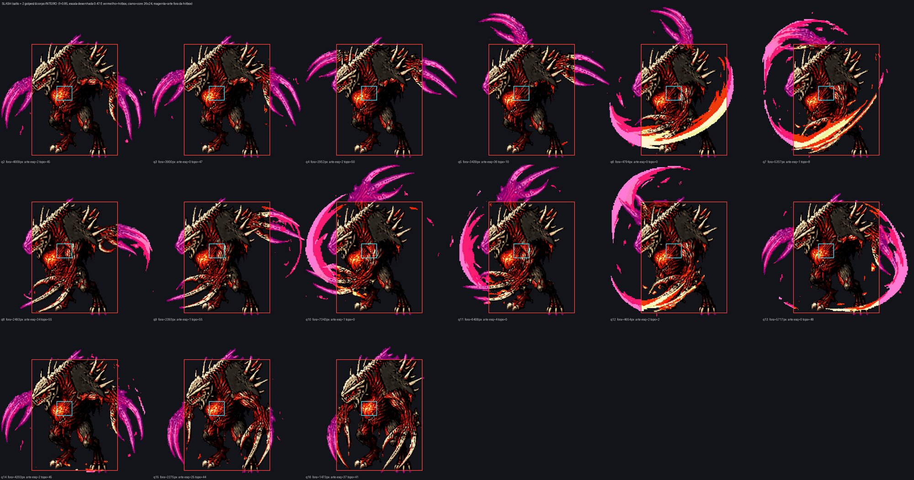
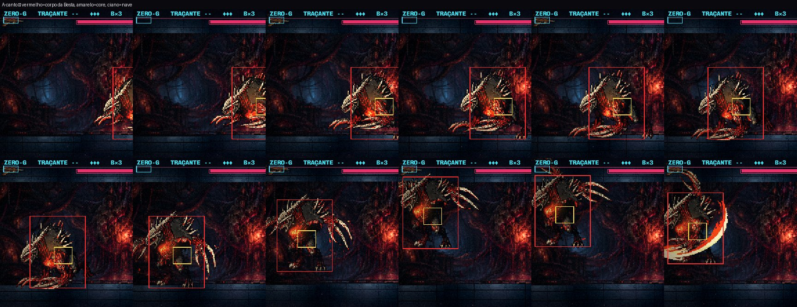
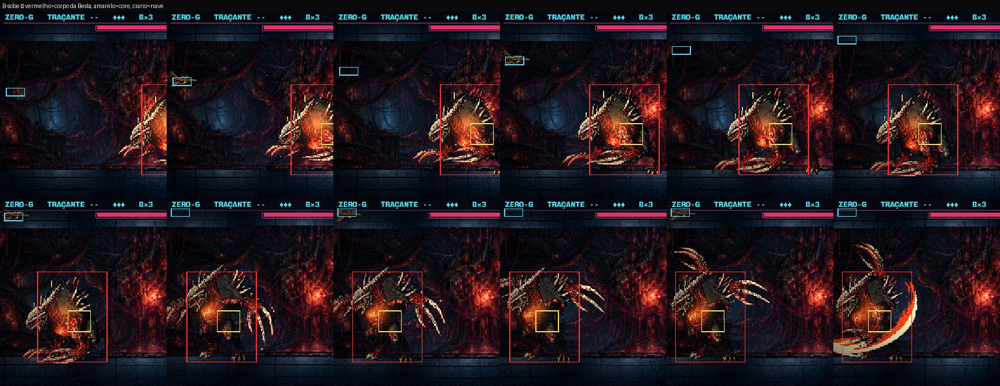
De quatro, o peito aceso desce, mas o core e a luz ficam na altura da pose em pé, sobre o ombro escuro. Na tira de cima, os quadros 3–6 mostram o amarelo nas costas e o brilho pintado abaixo.
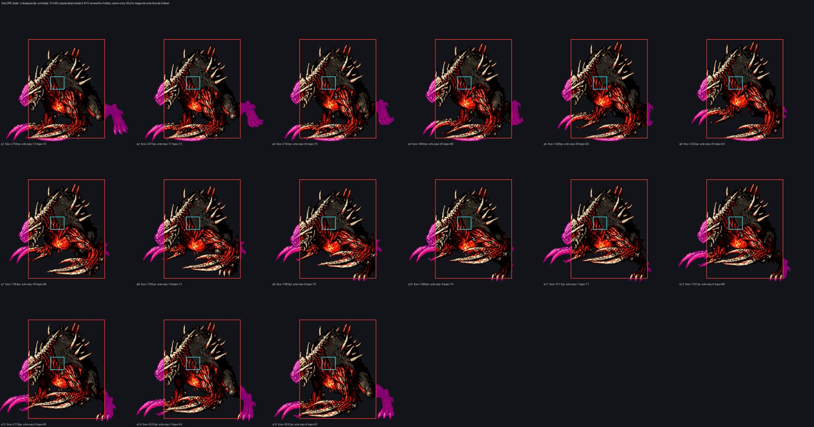
O clipe do teto PINTA a própria bola (quadros 10–16), que cai em diagonal até o chão, enquanto o motor lança a bola de verdade na nave. É o mesmo artefato do chão que você achou em 19/09, e lá foi resolvido cortando o clipe no 14. O do teto toca os 17 quadros.
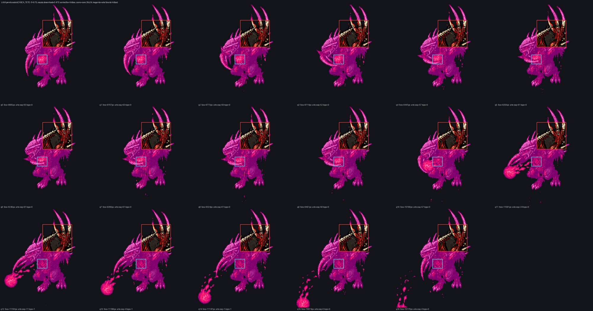

Para a direita (e a SAÍDA da tela): a pose parada predadorLuta, com um pulinho em seno. Os 6 quadros têm a mesma pose. De teto a teto: o laço do balanço enquanto a garra desliza pelo teto, sem trocar de mão. Chão→teto / teto→chão: uma reta, com o clipe da agarrada (e o mesmo clipe AO CONTRÁRIO na descida: cai com o braço erguido).


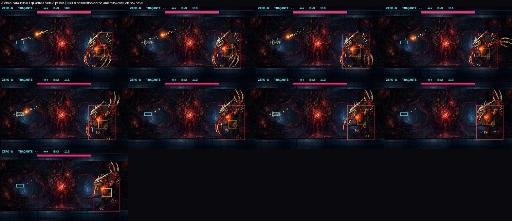
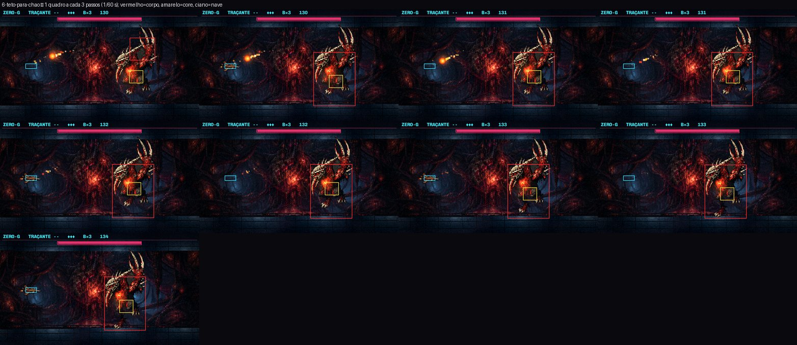
O aviso (o core aceso na borda), o galope até o meio, o rasgo e o metal em arco funcionam e se leem. O clipe pinta uma onda de fogo enorme (quadros 12–16) que não fere: quem fere é só o metal.
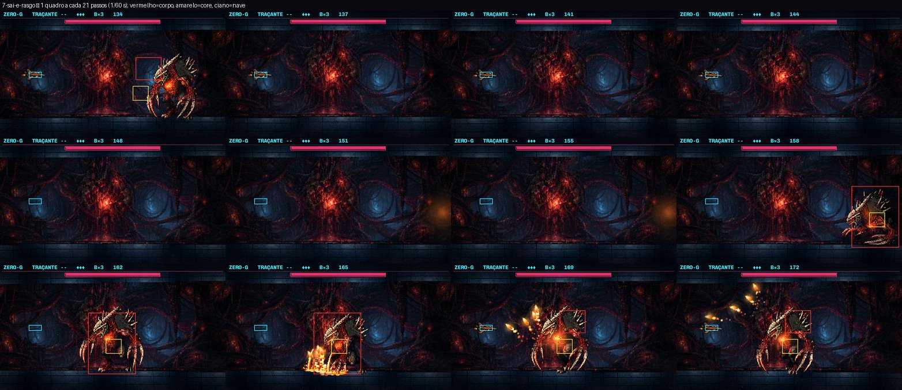
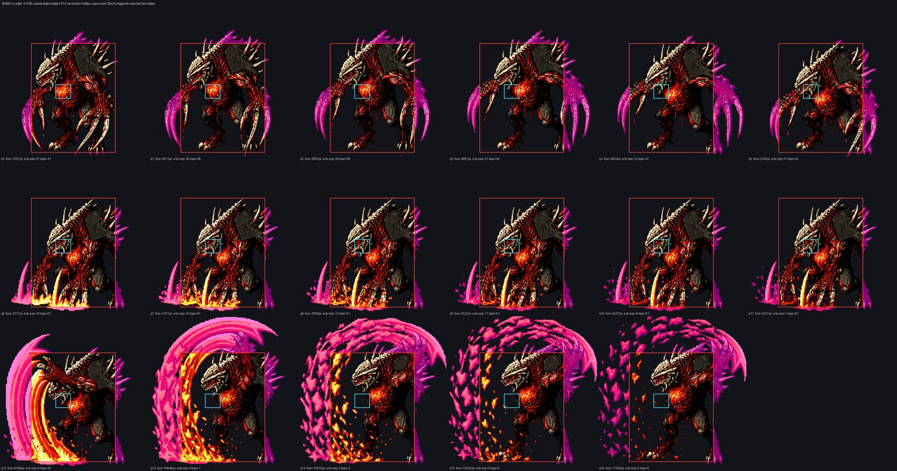
Na carga o core pisca rápido (o aviso), mas no galope e no slash ele volta ao pulso lento do breu (2,4 s, base 0). O ataque mais perigoso passa no escuro: na tira, os quadros de 214 a 220 só mostram os retângulos.

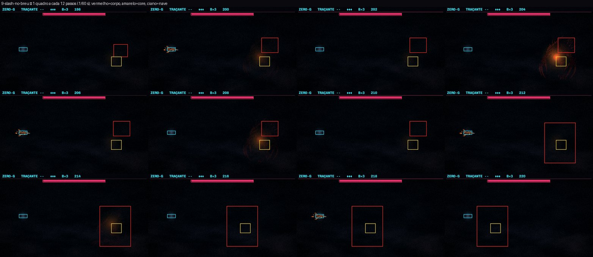
Os quatro chefões no jogo (a Capitânia, a Serpente, o Guardião, a Besta), sem nada desenhado por cima. Depois, o recorte em tamanho real (a Besta, o Guardião e a Serpente) e o surgimento.
O brilho: 12% dos pixels dela passam de meia luz. No Guardião são 1%, na Serpente 5% e na Capitânia 0,3%. São os ossos, as garras e o crânio, quase brancos, e o vermelho do corpo também acende. A escala: o Guardião é desenhado a 0,70 do tamanho da arte e ela a ~0,55. Por isso as garras finas se partem em pontilhado.
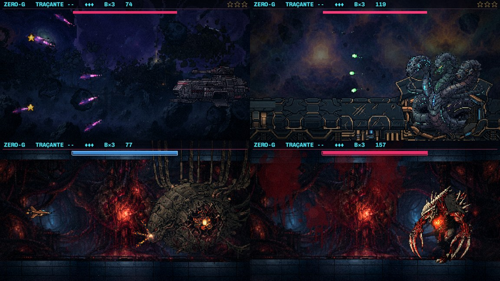
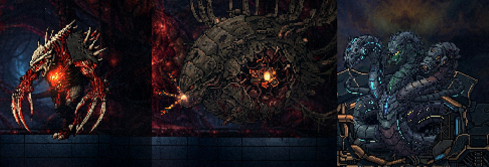
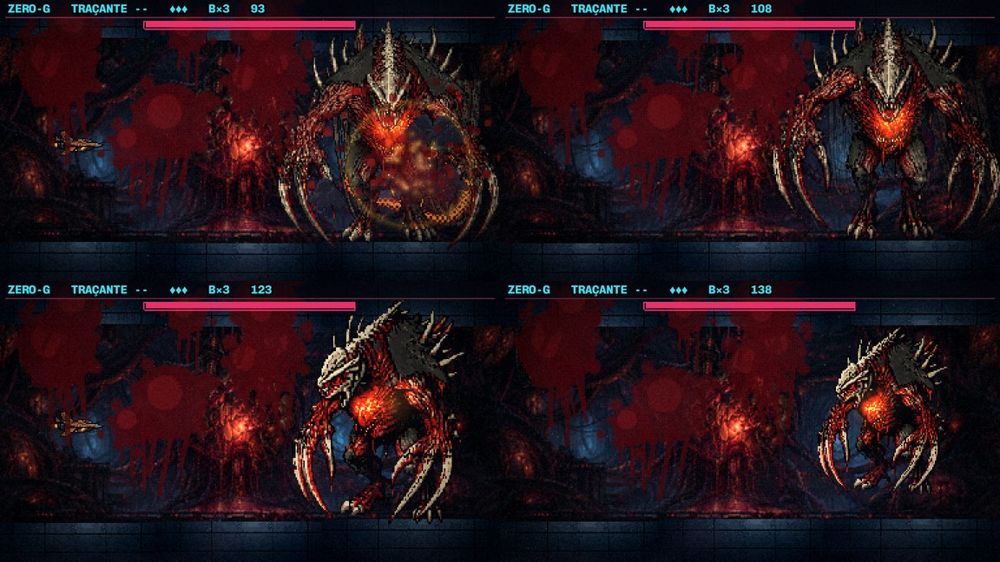
Parada, ela só é sólida na placa do ombro: cabeça, braços e pernas não seguram bala nem ferem.
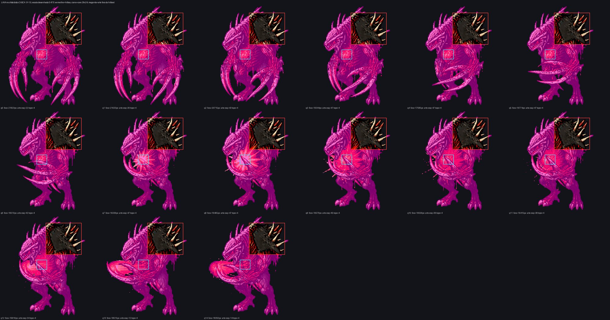
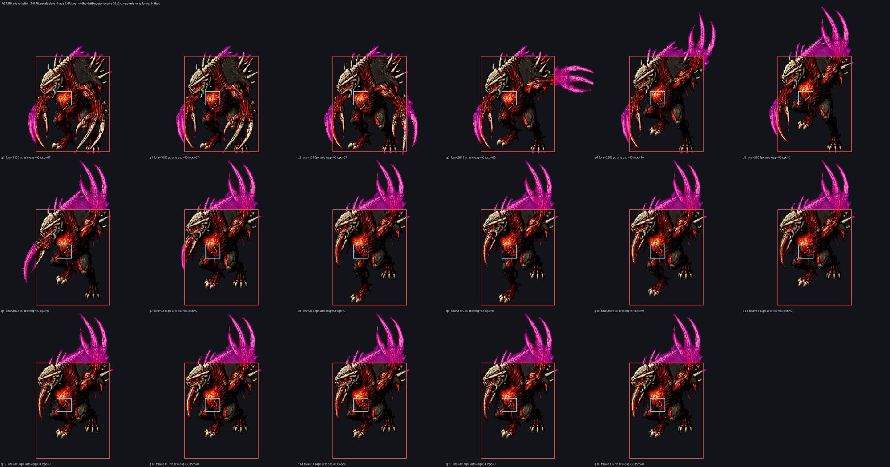